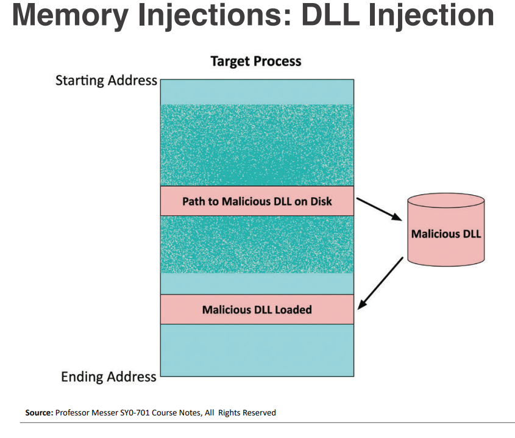
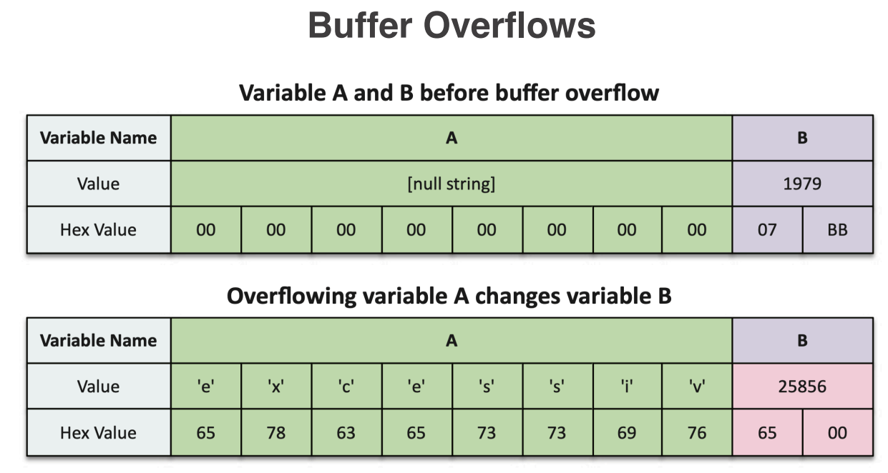
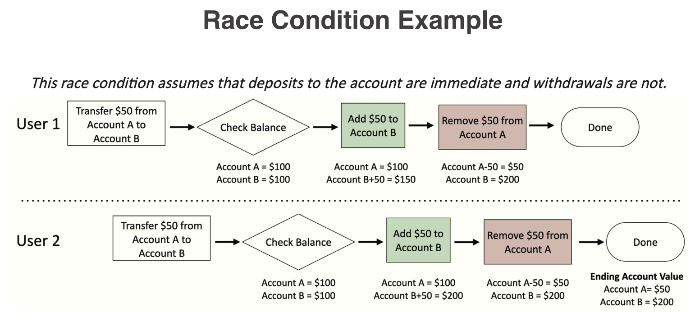
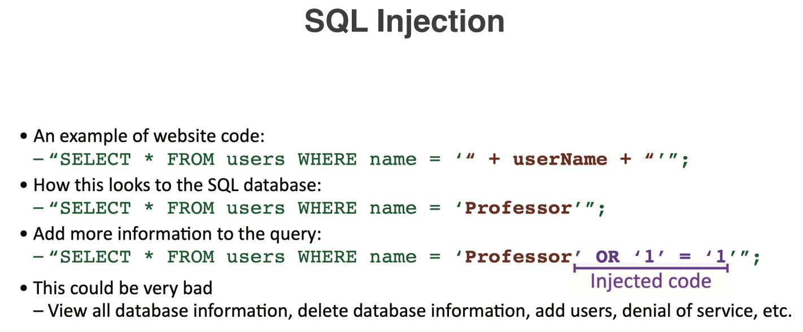
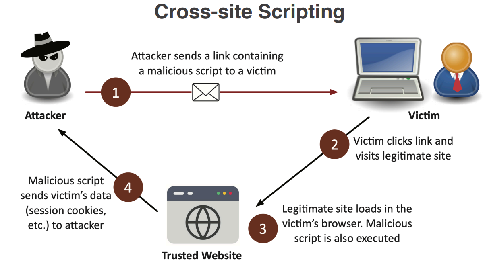
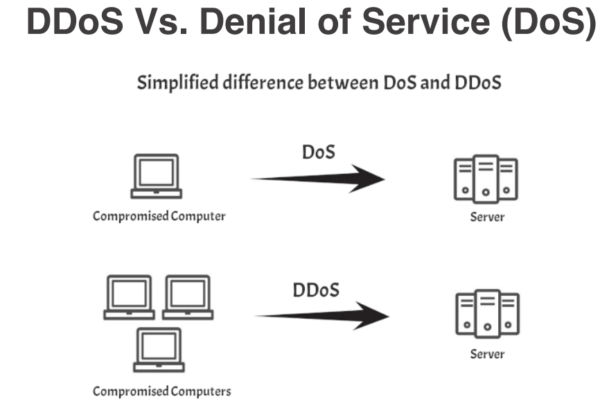

Date Taken: Fall 2025
Status: Completed
Reference: LSU Professor Joseph Khoury, ChatGBT
Memory injection attacks involve inserting malicious code or data into a program's memory space to exploit vulnerabilities and gain unauthorized access or control over the system. These attacks can take various forms, including buffer overflows, heap spraying, and return-oriented programming (ROP).
Malware runs in memory, so memory forensics is a key tool in finding and analyzing malware. Memory contains running processes, network connections, and other artifacts that can provide insights into the behavior and capabilities of the malware, example - DLL (Dynamic Link Library), Threads, Buffer, Memory management functions, etc. Malware is hidden in memory, so traditional file-based antivirus solutions may not be effective in detecting it.
Add code into the memory of an existing process. Hide malware inside legitimate processes to avoid detection. Common techniques include DLL injection, code injection, and process hollowing. Get access to the data in that process. Examples include stealing credentials, capturing keystrokes, and exfiltrating sensitive information.
DLL injection is a technique used to run malicious code within the address space of another process by forcing it to load a dynamic link library (DLL). Dynamic Link Libraries are files that contain code and data that can be used by multiple programs simultaneously, allowing for code reuse and modular programming. This allows the attacker to execute code with the same privileges as the target process, potentially leading to unauthorized access or control over the system. Common methods of DLL injection include using Windows API functions such as CreateRemoteThread, SetWindowsHookEx, and AppInit_DLLs.

A buffer overflow is a type of software vulnerability that occurs when a program writes more data to a buffer (a temporary storage area in memory) than it can hold. This can lead to adjacent memory locations being overwritten, potentially allowing an attacker to execute arbitrary code, crash the program, or gain unauthorized access to system resources. Buffer overflows can occur in various types of software, including operating systems, applications, and network services. They are often exploited by attackers to gain control over a target system or to execute malicious code.

A programming conundrum that occurs when the behavior of a software system depends on the timing or sequence of uncontrollable events, such as the order in which threads or processes are scheduled to run. Sometimes, things happen at the same time, and the program gets confused about what to do first. This can lead to unexpected behavior, data corruption, or security vulnerabilities if not properly managed. Time-of-check to time-of-use (TOCTOU) check the system state and then use that state later, but the state may have changed in the meantime.
This is because race conditions can allow them to manipulate the timing of operations and exploit the brief window between security checks and the actual use of resources, potentially bypassing controls or gaining unauthorized access. In which case the client will not receive the expected result, potentially allowing an attacker to exploit the timing gap to gain unauthorized access or manipulate data.
A user checks their account balance and sees they have $100. They then initiate a withdrawal of $100. However, before the withdrawal is processed, another transaction occurs that deducts $50 from their account. If the system does not recheck the balance before processing the withdrawal, it may allow the user to withdraw more money than they actually have, leading to an overdraft or negative balance.

Software updates are essential for maintaining the security, performance, and functionality of software applications and systems. They often include patches for known vulnerabilities, bug fixes, and new features or enhancements. Regularly updating software helps protect against emerging threats and ensures that users have access to the latest improvements and capabilities. Many software vendors release updates on a regular schedule, such as monthly or quarterly, while others may release updates as needed in response to specific security issues or bugs.
Always download software updates from official sources, such as the vendor's website or trusted app stores, to avoid downloading malicious or counterfeit software. Verify the authenticity of the update by checking digital signatures or hashes provided by the vendor to ensure that the update has not been tampered with. Schedule regular updates and enable automatic updates when available to ensure that software is always up-to-date with the latest security patches and features. Test updates in a controlled environment before deploying them to production systems to identify and address any potential compatibility issues or bugs. Keep all software components, including operating systems, applications, and third-party libraries, up-to-date to minimize vulnerabilities across the entire software stack.
Automatic updates are a feature that allows software applications and systems to automatically download and install updates without requiring manual intervention from the user. This helps ensure that software remains up-to-date with the latest security patches, bug fixes, and features, reducing the risk of vulnerabilities and improving overall performance. Many operating systems, web browsers, and applications offer automatic update options that can be enabled in the settings or preferences menu. While automatic updates can provide convenience and improved security, it is important to monitor the update process to ensure that updates are successfully installed and do not introduce new issues or compatibility problems.
Operating systems (OS) are complex software platforms that manage hardware resources and provide services for applications. Due to their complexity and widespread use, operating systems are often targeted by attackers seeking to exploit vulnerabilities for malicious purposes. Everyone uses an operating system, so they are a common target for attackers. It is also remarkably complex, so there are many opportunities for vulnerabilities. We've just have not found them all yet.
A month of OS updates typically includes a series of patches and updates released by the operating system vendor to address security vulnerabilities, fix bugs, and improve performance. These updates are often released on a regular schedule, such as monthly or quarterly, and may include critical security patches that address newly discovered threats. It is important for users and organizations to regularly apply these updates to ensure that their systems remain secure and up-to-date with the latest features and improvements. Example: Microsoft Patch Tuesday - Second Tuesday of each month.
Always update your operating system to the latest version to ensure that you have the most recent security patches and features. May require testing before deployment to ensure compatibility with existing applications and systems. May require a reboot to complete the installation process and apply the updates. Have a fallback plan in case the update causes issues or problems with the system. Regularly back up important data and system configurations before applying updates to prevent data loss in case
Code injection is a type of cyber attack where an attacker inserts malicious code into a vulnerable application or system. The goal of code injection is to exploit vulnerabilities in the target system to execute arbitrary code, gain unauthorized access, or manipulate data. Common types of code injection attacks include SQL injection, cross-site scripting (XSS), and command injection. Code injection attacks can lead to data breaches, unauthorized access, and other security incidents if not properly mitigated. There are many different data types that can be injected, such as SQL, HTML, JavaScript, XML, and OS commands.
SQL (Structured Query Language) injection is a type of code injection attack that targets web applications by inserting malicious SQL code into input fields or URL parameters. Real life example of an SQL injection attack is when an attacker enters a specially crafted SQL statement into a login form's username or password field, such as ' OR '1'='1'; --. This input manipulates the SQL query executed by the application to always return true, allowing the The goal of SQL injection is to exploit vulnerabilities in the application's database layer to execute arbitrary SQL commands, gain unauthorized access to data, or manipulate database records. SQL injection attacks can lead to data breaches, unauthorized access, and other security incidents if not properly mitigated. Attackers can use SQL injection to bypass authentication, retrieve sensitive data, modify or delete records, and even execute administrative operations on the database.

Cross-Site Scripting (XSS) is a type of code injection attack that targets web applications by injecting malicious scripts into web pages viewed by other users. Real life example of an XSS attack is when an attacker posts a comment on a blog that contains a malicious JavaScript code snippet. When other users view the comment, the script executes in their browsers, potentially stealing their session cookies or redirecting them to a malicious website. The goal of XSS attacks is to exploit vulnerabilities in the application's input validation and output encoding mechanisms to execute arbitrary scripts in the context of the victim's browser. XSS attacks can lead to data theft, session hijacking, defacement, and other security incidents if not properly mitigated. There are three main types of XSS attacks: Stored XSS, Reflected XSS, and DOM-based XSS.

A non-persistent XSS attack, also known as reflected XSS, occurs when an attacker injects malicious code into a web application that is immediately reflected back to the user in the response. This type of attack typically involves tricking a user into clicking on a specially crafted link or submitting a form that contains the malicious code. The injected code is not stored on the server and is only executed in the context of the user's browser when they interact with the malicious link or form. Non-persistent XSS attacks can lead to data theft, session hijacking, and other security incidents if not properly mitigated.
A persistent XSS attack, also known as stored XSS, occurs when an attacker injects malicious code into a web application that is permanently stored on the server and served to users who access the affected page. This type of attack typically involves exploiting vulnerabilities in user-generated content, such as comments, forums, or profile pages. The injected code is stored in the application's database or file system and is executed in the context of the user's browser whenever they view the affected page. Persistent XSS attacks can lead to data theft, session hijacking, defacement, and other security incidents if not properly mitigated.
Be careful about what you click on. Don't click on links in emails or messages from unknown sources. Consider disabling scripts in your browser using extensions like NoScript for Firefox or ScriptSafe for Chrome. Keep your browser and plugins up to date to ensure you have the latest security patches. Don't allow users to add HTML or JavaScript to your site. Use a library to sanitize input, such as the OWASP Java HTML Sanitizer or DOMPurify for JavaScript. Use Content Security Policy (CSP) headers to restrict the sources of scripts and other content
Cloud adoption has been growing rapidly in recent years, with more and more organizations moving their data and applications to cloud-based platforms. Security in the cloud refers to the set of policies, technologies, and controls implemented to protect data, applications, and infrastructure associated with cloud computing environments. Cloud security is a shared responsibility between the cloud service provider (CSP) and the customer, with each party responsible for different aspects of security. Cloud security encompasses a wide range of practices and technologies, including data encryption, access control, identity management, network security, and compliance with regulatory requirements. As organizations increasingly adopt cloud computing for its scalability, flexibility, and cost-effectiveness, ensuring robust cloud security has become a critical priority to protect against data breaches, cyber attacks, and other security threats.
Attacking the service in the context of cloud security refers to various methods and techniques that threat actors may use to exploit vulnerabilities in cloud-based services and infrastructure. These attacks can target different layers of the cloud stack, including the application layer, network layer, and infrastructure layer.
A Denial of Service (DoS) attack is a cyber attack that aims to disrupt the normal functioning of a targeted system, service, or network by overwhelming it with a flood of illegitimate requests or traffic. The goal of a DoS attack is to make the targeted resource unavailable to legitimate users, causing inconvenience, financial loss, and damage to the organization's reputation. DoS attacks can take various forms, including volumetric attacks that flood the target with excessive traffic, protocol attacks that exploit weaknesses in network protocols, and application-layer attacks that target specific vulnerabilities in web applications or services. Distributed Denial of Service (DDoS) attacks are a more sophisticated form of DoS attack that involves multiple compromised systems (often part of a botnet) working together to launch a coordinated attack on the target. DDoS attacks can be particularly challenging to defend against due to their scale and complexity, often requiring specialized mitigation strategies and technologies.
A "friendly" Denial of Service (DoS) attack, also known as a stress test or load test, is a controlled and intentional simulation of a DoS attack conducted by an organization to evaluate the resilience and performance of its systems, applications, or network infrastructure under high traffic conditions. The purpose of a friendly DoS is to identify potential vulnerabilities, bottlenecks, and weaknesses in the system that could be exploited by malicious attackers in a real DoS attack. Friendly DoS tests are typically performed in a controlled environment with the consent and knowledge of all stakeholders involved. They may involve generating high volumes of traffic or requests to simulate the effects of a real DoS attack, allowing organizations to assess their ability to handle increased loads and maintain service availability. It is important to conduct friendly DoS tests responsibly and ethically, ensuring that they do not disrupt normal operations or negatively impact legitimate users.
A Distributed Denial of Service (DDoS) attack is a type of cyber attack that involves multiple compromised systems, often part of a botnet, working together to flood a targeted system, service, or network with an overwhelming amount of traffic or requests. The goal of a DDoS attack is to exhaust the target's resources, such as bandwidth, processing power, or memory, making it unavailable to legitimate users and causing disruption to normal operations. DDoS attacks can take various forms, including volumetric attacks that generate massive amounts of traffic, protocol attacks that exploit weaknesses in network protocols, and application-layer attacks that target specific vulnerabilities in web applications or services. DDoS attacks can be particularly challenging to defend against due to their scale and complexity, often requiring specialized mitigation strategies and technologies. Common methods for mitigating DDoS attacks include traffic filtering, rate limiting, load balancing, and the use of content delivery networks (CDNs) to distribute traffic across multiple servers.
DDoS reflection and amplification is a technique used by attackers to increase the scale and impact of a Distributed Denial of Service (DDoS) attack by exploiting vulnerabilities in third-party servers or services. The attacker sends a small request to a vulnerable server, which then responds with a much larger response that is directed towards the target of the attack. This allows the attacker to amplify the amount of traffic directed at the target, making it more difficult to defend against the attack. Common services that can be exploited for DDoS reflection and amplification include DNS servers, NTP servers, and Memcached servers. To mitigate the risk of DDoS reflection and amplification attacks, organizations should implement proper security measures, such as rate limiting, traffic filtering, and disabling unnecessary services on their servers.

DDoS Vs. DoS - A DoS attack typically originates from a single source, while a DDoS attack involves multiple sources, making it more difficult to defend against. DDoS attacks can generate significantly higher volumes of traffic compared to DoS attacks, making them more effective at overwhelming the target's resources. DDoS attacks often require more sophisticated mitigation strategies and technologies due to their scale and complexity
An attack chain, also known as a kill chain, is a model that describes the various stages and steps involved in a cyber attack.
The attack chain provides a framework for understanding how attackers plan, execute, and achieve their objectives, allowing organizations to identify and mitigate threats at each stage of the attack.
The attack chain typically consists of several stages, including reconnaissance, weaponization, delivery, exploitation, installation, command and control (C2), and actions on objectives.
By understanding the attack chain, organizations can implement proactive security measures to detect and prevent attacks before they reach their final objectives.
THE CYBER KILL CHAIN - LockHeedMartin
https://www.lockheedmartin.com/en-us/capabilities/cyber/cyber-kill-chain.html
Is a standardized identifier for a specific, publicly known vulnerability or exposure in software or firmware.
A CVE (Common Vulnerabilities and Exposures) is like a unique ID number given to a specific security flaw found in software or hardware.
For example, "CVE-2017-0144" refers to the Windows vulnerability used by the WannaCry ransomware. Each CVE entry includes a brief description of the vulnerability and references to related reports or patches.
In summary, CVEs help security professionals and organizations talk about, find, and fix vulnerabilities more efficiently.
It's how the security community consistently refers to the same bug and tracks it across bulletins, patches, and tools.
https://www.cve.org/
Is a curated list (a “dictionary”) of software weakness types; design or coding patterns that often lead to vulnerabilities.
It helps teams understand root causes and build prevention strategies
https://cwe.mitre.org/